|
Menu
Funções |
|
Interpolação
Tabular
Essa função
permite realizar interpolação unidimensional ou bidimensional de dados
tabulares, mapeando um
ou dois parâmetros através
de uma
curva ou tabela para obter um novo parâmetro. Essa operação é conhecida
como “table look-up”.
As operações
disponíveis são:
Clique no menu “Funções ► Interpolação
... ► Unidimensional / Bidimensional” ou clique nos botões 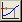
Interpolação
Tabular Unidimensional
Essa operação
mapeia um parâmetro de entrada X através de
uma curva [xi, yi]
para obter um parâmetro de
saída Y por interpolação.
Ao escolher
essa opção, a Caixa de Diálogo solicitará que o
usuário indique os parâmetros para a operação:
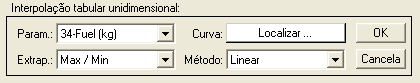
● No campo
“Param.”, selecione o parâmetro de entrada.
O gráfico será atualizado conforme a seleção.
● No campo “Extrap.” indique
o método de extrapolação desejado. Essa opção define o comportamento da
interpolação de pontos fora do domínio da curva. As opções são:
|
Opção |
Descrição |
|
NaN |
Valores de
entrada fora do domínio resultam em valores de saída inválidos (NaN). |
|
0 |
Valores de
entrada fora do domínio resultam em valores iguais a zero. |
|
Max / Min |
Valores de
entrada fora do domínio são limitados aos valores máximo e mínimo
(saturação). |
|
Extrapolar |
Valores de
entrada fora do domínio são extrapolados conforme o método selecionado. |
● No campo
“Método”, selecione o método de
interpolação desejado. As opções são:
-
Linear;
-
Vizinho;
- Spline; e
-
Cúbico.
● No campo
“Curva”, clique no botão para
procurar o arquivo com
a curva de interpolação.
Na janela que surgirá, selecione o tipo de arquivo que contém a curva
de
interpolação no campo “Arquivos do tipo:”. As opções são “Dados em
formato
texto (.txt, .dat)”
ou “Planilha Excel (.xls)”.
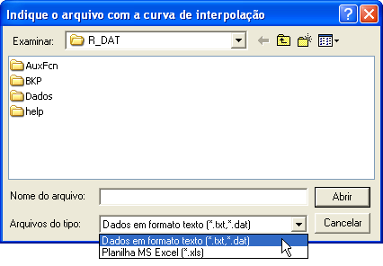
Após localizar
o arquivo, clique “Abrir”. O R_DAT abrirá e
analisará o conteúdo do arquivo.
Para a correta
abertura, o arquivo deve seguir as seguintes
formatações:
Arquivo texto:
- Duas colunas
numéricas [xi, yi]
separadas por espaços,
tabulações, vírgulas ou ponto-e-vírgula, com ponto como separador decimal.
- Linhas de cabeçalho com nomes dos parâmetros e unidades são opcionais.
Planilha Excel:
- Duas colunas
numéricas [xi, yi].
- Linhas de
cabeçalho com nomes dos parâmetros e unidades são opcionais.
Exemplos:
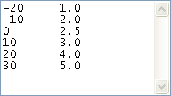
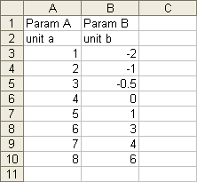
Depois de abrir
o arquivo, o R_DAT irá apresentar a curva em
uma janela à parte, para que o usuário visualize e verifique a correção
da
mesma.
O intervalo dos
dados de entrada será apresentado na borda
inferior do gráfico, em vermelho.
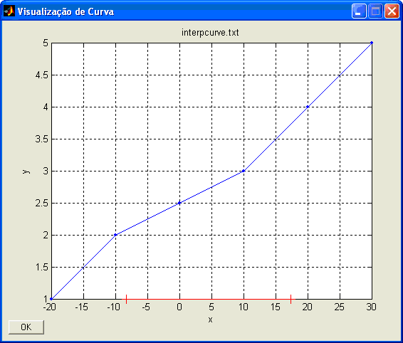
Pressione “OK”
para fechar a janela. Caso necessário, é
possível substituir a curva repetindo o procedimento.
Ao pressionar
“OK” na Caixa de Diálogo, o R_DAT realizará a
interpolação e apresentará temporariamente o resultado no gráfico
principal.
Para confirmar, dê um nome adequado ao novo parâmetro na Caixa de
Diálogo e
clique “OK”. Para cancelar e descartar o novo parâmetro, clique
“Cancela”.

Após definir o
nome e pressionar “OK”, o novo parâmetro será
acrescentado às matrizes de trabalho antes do parâmetro “No.OBS.”.
Lógica
de
Operação
Cada ponto do
parâmetro de entrada é mapeado através da
curva de interpolação, resultando em um ponto correspondente no
parâmetro de
saída:
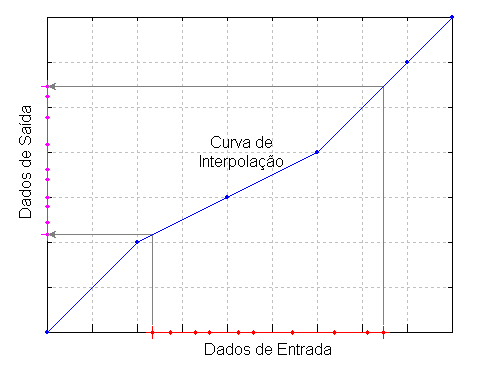
Interpolação
Tabular Bidimensional
Essa operação
mapeia dois parâmetros de entrada X e Y
através de uma tabela zij
= f ( xi, yj
) para obter um parâmetro de
saída Z por interpolação bidimensional. Essa operação é conhecida como “table look-up”.
Ao escolher
essa opção, a Caixa de Diálogo solicitará que o
usuário indique os parâmetros para a operação:
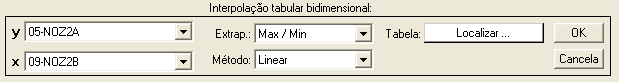
● Nos campos
“x” e “y”, selecione os parâmetros de entrada.
O gráfico será atualizado conforme a seleção.
● Nos campo “Extrap.”
indique o método de extrapolação desejado. Essa opção define o
comportamento da
interpolação de pontos fora do domínio da curva. As opções são:
|
Opção |
Descrição |
|
NaN |
Valores de
entrada fora do domínio resultam em valores de saída inválidos (NaN). |
|
0 |
Valores de
entrada fora do domínio resultam em valores iguais a zero. |
|
Max / Min |
Valores de
entrada fora do domínio são limitados aos valores máximo e mínimo
(saturação). |
Obs.: não é possível
extrapolar.
● No campo
“Método”, selecione o método de
interpolação desejado. As opções são:
-
Linear;
-
Vizinho;
- Spline; e
-
Cúbico.
● No campo
“Tabela”, clique no botão para procurar o arquivo com
a tabela de
interpolação. Na janela que surgirá, selecione o tipo de arquivo que
contém a
tabela de interpolação no campo “Arquivos do tipo:”. As opções são
“Dados em
formato texto (.txt, .dat)”
ou “Planilha Excel (.xls)”.
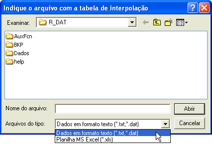
Após localizar
o arquivo, clique “Abrir”. O R_DAT abrirá e
analisará o conteúdo do arquivo.
Para a correta
abertura, o arquivo deve seguir as seguintes
formatações:
Arquivo texto
- Tabela numérica sendo a 1ª coluna os valores de x, a
1ª linha os valores
de y e o corpo os valores de z, com ponto como separador
decimal.
- O 1º elemento pode
ser qualquer valor, pois será ignorado.
- Não pode haver
linhas de cabeçalho.
NaN y1
y2
y3 ...
x1 z11
z12 z13 ...
x2
z21 z22 z23
...
x3 z31
z32 z33 ...
: : :
:
Planilha Excel
- Análoga
à formatação do arquivo texto.
- Linhas e/ou
colunas contendo texto serão ignoradas.
Exemplos:
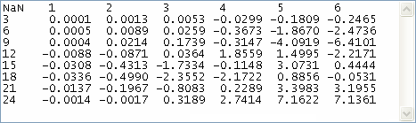
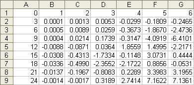
Depois de abrir
o arquivo, o R_DAT irá apresentar uma
representação gráfica da tabela em uma janela à parte, para que o
usuário
visualize e verifique a correção da mesma. A tabela é representada como
uma
superfície em escala cromática em que cada vértice representa um
elemento da
tabela.
O domínio da
tabela (cobertura dos dados em x e y) é
apresentado em vermelho e os dados de entrada são apresentados em azul
no plano
xy.
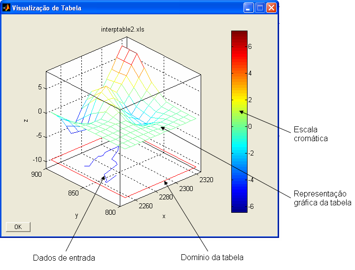
Pressione “OK”
para fechar a janela. Caso necessário, é
possível substituir a tabela repetindo o procedimento.
Ao pressionar
“OK” na Caixa de Diálogo, o R_DAT realizará a
interpolação e apresentará temporariamente o resultado no gráfico
principal.
Para confirmar, dê um nome adequado ao novo parâmetro na Caixa de
Diálogo e
clique “OK”. Para cancelar e descartar o novo parâmetro, clique
“Cancela”.
Após definir o
nome e pressionar “OK”, o novo parâmetro será
acrescentado às matrizes de trabalho antes do parâmetro “No.OBS.”.
Lógica
de
Operação
Cada par de
pontos dos parâmetros de entrada são mapeados
pela tabela de interpolação, resultando em um ponto correspondente no
parâmetro
de saída:
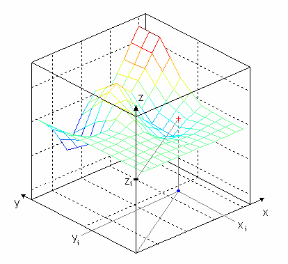
|
|
Operações binárias |
Conversões
anemométricas |
|